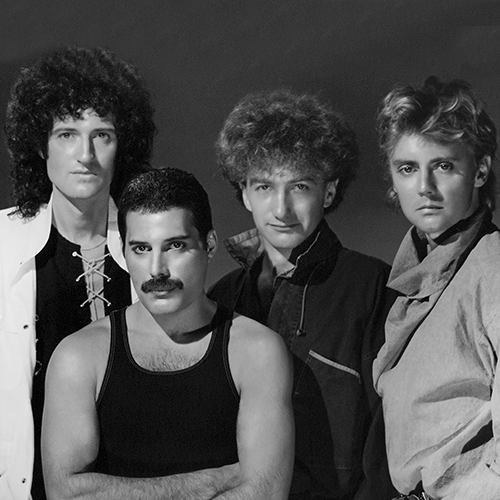

Okay, non sono brava a parlare di me e dei miei interessi, but I can try.
Dunque, mi chiamo Federica, ho 15 anni e la mia specialità è procrastinare e perdere tempo in tutto cio' che faccio. Adoro letteralmente studiare la storia dell'arte, la filosofia occidentale e la poesia. Ho un'ossessione estremamente esagerata per i Coldplay, gli anime, i manga e le serie tv. Da grande vorrei diventare una biomedica e,eventualmente, lavorare in Giappone. Nel tempo libero (cioè mai) mi diverto a ri-disegnare i personaggi dei miei anime preferiti per poi caricarli sul mio secondo profilo Instagram, che condivido con una mia amica (Studioart_fm)Non so piu' cosa scrivere, so... Buona permanenza sul mio sito!
Coldplay:
Oasis:
Queen:
La mia corrente artistica preferita e' il post-impressionismo, di cui Vincent Van Gogh e' stato il massimo esponente.
Kaitlyn Weaver e Andrew Poje sono i miei pattinatori preferiti. Entrambi, sono nati in Canada e, fin da piccoli, hanno dimostrato un grande talento per il pattinaggio sul ghiaccio. Con il loro programma free-dance "Je suis malade", hanno fatto emozionare tantissime persone.